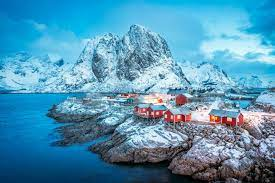
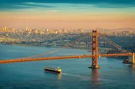
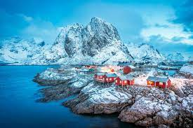
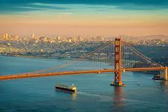

School Life is the best time of our life as we make new friends, learn new things and build our career there. School time is the only time which we enjoy most, and when we enter college, we always miss our school life. School life teaches us lots of new things and prepares us to face all the challenges of life. I love my school life and really enjoy it. I have lots of friends, and all my teachers love me. I love my school and enjoy going there every day to meet my friends and learn new things. Everyone keeps on saying that school life is the best time of your life. When listening to these phrases from their elders, the school students think about what is good about this life. All we do in the entire day is to attend the classes and to do the homework. But once school life gets over, the students realise that school life was the best time of their life.
Families are an integral part of one’s life. It does not matter if you have a small or big family, as long as you have one. A family serves as the first school to the child where one learns about various things. The basic knowledge about one’s culture and identity comes from their family only. In other words, you are a reflection of your family. All the good habits and manners one has incorporated are from their family only. I feel very lucky to be born in a family which has made me a better person. In my opinion, families are an essential part of one’s being. In this essay on my family, I will tell you why family is important.
 




Travelling is an amazing way to learn a lot of things in life. A lot of people around the world travel every year to many places. Moreover, it is important to travel to humans. Some travel to learn more while some travel to take a break from their life. No matter the reason, travelling opens a big door for us to explore the world beyond our imagination and indulge in many things.